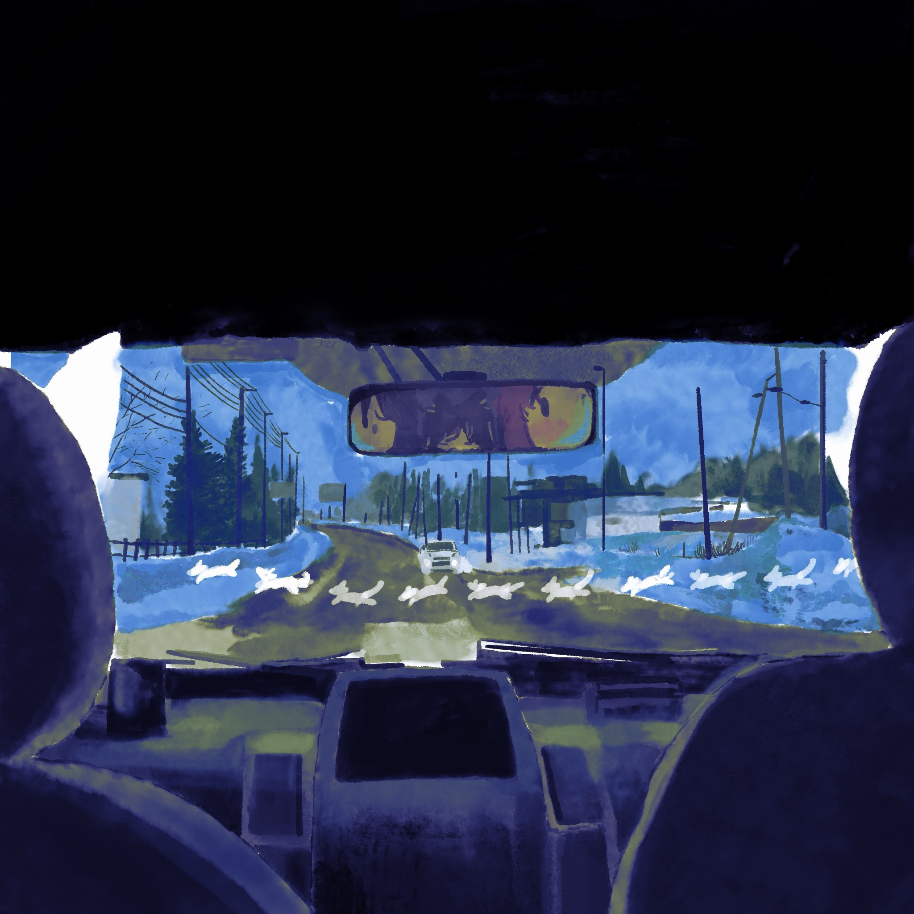

Red Tailed Hawk
Return to the homepage
⠀⠀⠀⠀⠀⠀⠀⠀⠀⠀⠀⠀⠀⣀⣀⣤⣤⣤⣶⣶⣶⣶⣶⣶⣶⣶⣶⣶⣶⣤⣤⣤⣀⣀⠀⠀⠀⠀⠀⠀⠀⠀⠀⠀⠀⠀⠀⠀⠀⠀⠀⠀⠀⠀⠀
⠀⠀⠀⠀⠀⠀⠀⠀⠀⠀⣴⣿⣿⣿⣿⣿⣿⣿⣿⣿⣿⣿⣿⣿⣿⣿⣿⣿⣿⣿⣿⣿⣿⣿⣧⣄⡀⠀⠀⠀⠀⠀⠀⠀⠀⠀⠀⠀⠀⠀⠀⠀⠀⠀⠀
⠀⠀⠀⠀⠀⠀⠀⠀⢀⣾⣿⣿⣿⣿⣿⣿⡿⠿⠿⠛⠛⠛⠛⠻⠿⠿⠿⣿⣿⣿⣿⣿⣿⣿⣿⣿⣿⣷⣤⣀⠀⠀⠀⠀⠀⠀⠀⠀⠀⠀⠀⠀⠀⠀⠀
⠀⠀⠀⠀⣀⣀⣠⣤⡾⢿⣿⣿⠿⠟⠉⠉⠀⠀⣠⣴⣶⣖⠒⡤⠀⠠⢾⣿⣭⣭⣾⣛⣻⣿⣿⣿⣿⣯⣍⣛⡿⣦⡀⠀⠀⠀⠀⠀⠀⠀⠀⠀⠀⠀⠀
⠀⢀⡴⠛⠉⢁⣀⠀⢤⡀⠹⣇⠀⠢⠂⠀⠤⣾⠹⣿⣷⣟⡴⠃⠀⣀⣼⣭⣟⠛⠯⠭⠼⠿⢿⣿⣿⣿⣿⣿⣯⣽⣻⣦⡀⠀⠀⠀⠀⠀⠀⠀⠀⠀⠀
⢀⡟⠁⢀⠎⠁⠀⠀⠈⠉⠆⠻⣿⣶⣀⣀⠀⠈⠓⠶⠶⠋⢁⣰⣾⣿⣭⡷⢖⣚⣿⠂⠌⣛⣻⣿⣿⣿⣿⣿⣿⣿⣿⣷⣿⣄⠀⠀⠀⠀⠀⠀⠀⠀⠀
⢸⠁⠀⠀⠀⠀⠀⠀⠐⠲⠶⢄⠈⢿⣿⣿⣿⣿⣿⣷⡾⠿⠿⢿⣿⣞⠳⠾⣷⣻⢿⣯⠽⠛⠛⠉⣹⣿⣿⣿⣿⣿⣿⣿⣿⣝⢦⠀⠀⠀⠀⠀⠀⠀⠀
⢸⠀⠀⢀⡠⠖⠛⠛⠛⠲⣄⡀⠑⠈⢿⣿⣿⣿⣿⣿⣿⣋⣩⠭⣒⣛⠭⡗⣶⠽⠛⠋⠉⠀⣀⣾⣿⣿⣿⣿⣿⣿⣿⣿⣿⣿⡻⢧⡀⠀⠀⠀⠀⠀⠀
⠸⡀⡠⠊⠉⠐⠲⢤⡂⢀⠀⠙⢦⡀⣀⠙⣿⣿⣿⣿⣿⣷⣶⠁⣲⣮⣝⣺⠷⠆⠀⠀⠀⣤⣿⣿⣿⣿⣿⣿⣿⣿⣿⣿⣿⣿⣿⣦⣵⡀⠀⠀⠀⠀⠀
⠀⠑⠁⠀⠀⠀⠀⠀⠈⠓⠷⣤⣠⣙⠻⠀⢸⣿⣿⣿⣿⣿⣿⣦⣶⡞⠉⠀⠀⠀⠀⠀⠸⠿⠛⣻⣿⣿⣿⣿⣿⣿⣿⣿⣿⣿⣿⣿⣿⣷⡀⠀⠀⠀⠀
⠀⠀⠀⠀⠀⠀⠀⠀⠀⠀⠀⠙⢤⠤⠝⠲⢿⣿⣿⣿⣿⣿⣿⣿⣿⠿⠛⠁⠀⠀⠀⠀⠀⠴⠾⣿⣿⣿⣿⣿⣿⣿⣿⣿⣿⣿⣿⣿⣿⣿⣷⡄⠀⠀⠀
⠀⠀⠀⠀⠀⠀⠀⠀⠀⠀⠀⠀⠀⠳⠁⠄⠀⠘⢿⣿⣿⣿⣿⣿⡟⠀⠀⠀⠀⠀⠀⠀⠀⠀⠀⠀⣤⣬⣿⣿⣿⣿⣿⣿⣿⣿⣿⣿⣿⣿⣿⣷⠀⠀⠀
⠀⠀⠀⠀⠀⠀⠀⠀⠀⠀⠀⠀⠀⠀⠇⡀⠀⠀⠀⣽⣿⣿⣿⣿⡇⠀⠀⠀⠀⠀⠀⠀⠀⠀⠀⠀⠀⠈⠻⣿⣿⣿⣿⣿⣿⣿⣿⣿⣿⣿⣿⣿⣦⠀⠀
⠀⠀⠀⠀⠀⠀⠀⠀⠀⠀⠀⠀⠀⠀⠈⢹⠀⠀⠀⠀⢹⣿⣿⣿⣷⡂⠀⠀⠀⠀⠀⠀⠀⠀⠀⠀⣠⣤⣤⣾⣿⣿⣿⣿⣿⣿⣿⣿⣿⣿⣿⣿⣿⡀⠀
⠀⠀⠀⠀⠀⠀⠀⠀⠀⠀⠀⠀⠀⠀⠀⠸⡆⠀⠀⠀⠘⣿⣿⡿⢟⠁⠀⠀⠀⠀⠀⠀⠀⠀⠀⠀⠈⠙⣿⣿⣿⣿⣿⣿⣿⣿⣿⣿⣿⣿⣿⣿⣿⣧⠀
⠀⠀⠀⠀⠀⠀⠀⠀⠀⠀⠀⠀⠀⠀⠀⢰⠀⠀⠀⠀⠀⠀⠀⠀⠀⠀⠀⠀⠀⠀⠀⠀⠀⠀⢀⡐⠻⣿⣿⣿⣿⣿⣿⣿⣿⣿⣿⣿⣿⣿⣿⣿⣿⣿⠀
⠀⠀⠀⠀⠀⠀⠀⠀⠀⠀⠀⠀⠀⠀⠀⡍⠀⠀⠀⠀⠀⣀⠤⠤⠤⠀⠒⠒⢤⡤⠴⠞⠛⠻⠿⠛⠛⠛⠛⠛⠛⠋⠙⣿⠏⢻⣻⣿⣿⣿⣿⣿⣿⣿⡇
⠀⠀⠀⠀⠀⠀⠀⠀⠀⠀⠀⠀⠀⠀⢸⠀⠀⡠⣶⠟⠉⠀⠀⠀⠀⠀⠀⠀⠀⠀⠀⠀⠀⠀⠀⠀⠀⠀⠀⠀⠀⠀⠀⠀⠀⠀⠃⠙⠿⠻⢿⠿⠿⠿⡇
⠀⠀⠀⠀⠀⠀⠀⠀⠀⠀⠀⠀⠀⠀⢸⡠⠊⠀⠀⠀⠀⠀⠀⠀⠀⠀⠀⠀⠀⠀⠀⠀⠀⠀⠀⠀⠀⠀⠀⠀⠀⠀⠀⠀⠀⠀⠀⠀⠀⠀⠀⠀⠀⠀⠀
⠀⠀⠀⠀⠀⠀⠀⠀⠀⠀⠀⠀⠀⠀⠈⠀⠀⠀⠀⠀⠀⠀⠀⠀⠀⠀⠀⠀⠀⠀⠀⠀⠀⠀⠀⠀⠀⠀⠀⠀⠀⠀⠀⠀⠀⠀⠀⠀⠀⠀⠀⠀⠀⠀⠀
- As of 2016, there were at least 20 red-tailed hawk nests in Manhattan. In 2010 there were just eight (The National Audubon Society, 2016)
- Red-tailed hawks are top predators themselves and have no natural predators. Nonetheless, their eggs and nestlings are sometimes preyed on by great-horned owls, crows, raccoons, and red foxes.
- There are approximately 2.3 million breeding individuals worldwide. Nearly 75% of all red-tailed hawks spend portions of the year in the United States (Cornell Lab or Ornithology, 2015).
- Pale Male, the famous red-tailed hawk and Manhattan resident, is believed to have fathered nearly 30 chicks in his lifetime (The National Audubon Society, 2016).d
- Migration does not occur often, but can be triggered by inadequate food resources. When it does occur, it takes place in the late fall and early spring in either an individual or group capacity.

- As of 2016, there were at least 20 red-tailed hawk nests in Manhattan. In 2010 there were just eight (The National Audubon Society, 2016)
- Red-tailed hawks are top predators themselves and have no natural predators. Nonetheless, their eggs and nestlings are sometimes preyed on by great-horned owls, crows, raccoons, and red foxes.
- There are approximately 2.3 million breeding individuals worldwide. Nearly 75% of all red-tailed hawks spend portions of the year in the United States (Cornell Lab or Ornithology, 2015).
- Pale Male, the famous red-tailed hawk and Manhattan resident, is believed to have fathered nearly 30 chicks in his lifetime (The National Audubon Society, 2016).d
- Migration does not occur often, but can be triggered by inadequate food resources. When it does occur, it takes place in the late fall and early spring in either an individual or group capacity.
